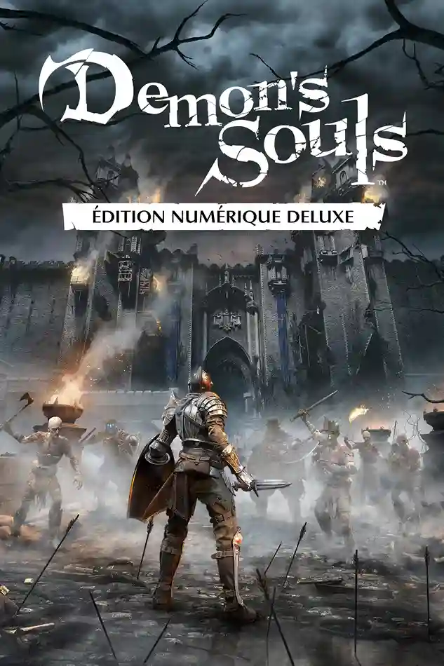
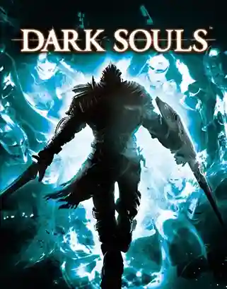
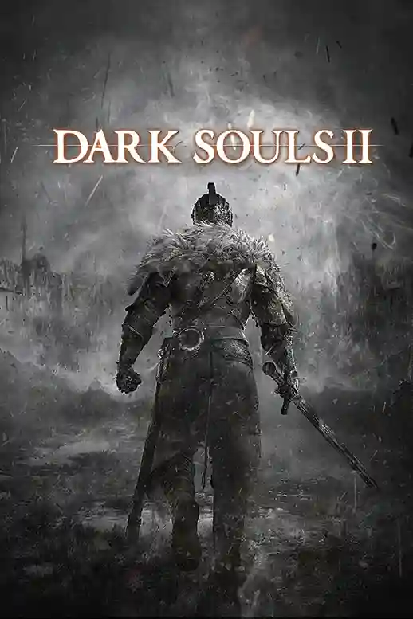
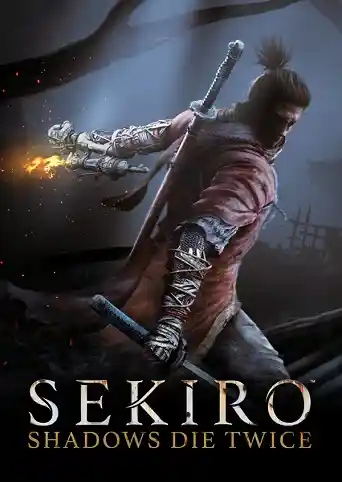
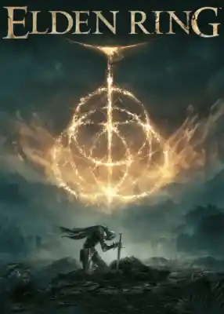

The Tarnished Archives
La Saga FromSoftware
Découvrez la magie et les défis de chaque jeux FromSoftWare
Catalogue
-
Demon’s Souls
2009Dans sa quête de pouvoir, le 12e roi de Boletaria, le roi Allant, s'appropria les anciens arts de l'âme, réveillant ainsi un démon aussi vieux que le monde, l'Ancien. Une épaisse brume et des créatures cauchemardesques ayant soif d'âmes humaines envahirent la région suite au réveil de l'Ancien.
-
Dans Dark Souls, on joue un mort-vivant marqué par le Signe Sombre, condamné à notre perdre peu à peu son humanité dans un monde qui s'effondre. Attiré jusqu'au royaume brisé de Lordan, on doit traverser des lieux hostiles, affronter des seigneurs déchus et comprendre le rôle de la Flamme primordiale. Au bout du chemin, c'est à nous de décider si l'Âge du Feu doit continuer encore un peu... ou laisser place aux Ténèbres.
2011Dark Souls
 -
Dark Souls II
2014Dans Dark Souls II, on incarne un être maudit qui rejoint Dragleic pour tenter de se libérer de notre malédiction. On découvre un royaume ravagé, hanté par les erreurs du roi et par âmes anciennes qui refusent de disparaître.De combat en combat, on s'approche du coeur de Drangleic et d'un choix difficile face au cycle sans fin de ruine et de renaissance.
-
Dans Bloodborne, on incarne un Chasseur qui arrive à Yharnam, une ville malade où les habitants se transforment peu à peu en bêtes. Au fil d'une nuit qui vire au cauchemar, on remonte les rues sombres, les cathédrales abandonnées et des dimensions plus étranges encore.En cherchant la source du "remède" et de la chasse, on se trouve face à des horreurs cosmiques et à la vraie nature du rêve dont on doit s'éveiller.
2015Bloodborne

-
Dark Souls III
 2016
2016Dans Dark Souls III, on joue un Mort-vivant sans braise, réveillé alors que la FLamme fondatrice est sur le point de s'éteindre pour de bon. Notre mission est de ramener de force les seigneurs des Cendres sur leur trône pour raviver le feu une dernière fois. En traversant un monde où les âges passés se mélangent et se meurent, nous devrons décider quoi faire de cette flamme qui ne veut plus brûler.
-
Dans Sekiro: Shadows Die Twice, vous incarnez le « loup a un bras », un guerrier déshonoré et défiguré sauvé de la mort. Chargé de protéger un jeune seigneur descendant d'une ancienne lignée, vous devenez la cible de nombreux ennemis vicieux, dont le dangereux clan Ashina. Lorsque le jeune seigneur est capturé, rien ne vous arrêtera dans votre périlleuse quête pour restaurer votre honneur, pas même la mort.
2019Sekiro : Shadow Die Twice
 -
Elden ring
2022Dans Elden Ring, on joue un Sans-éclat, un exilé rappelé dans l'Entre-terre après l'explosion du Cercle d'Elden. Libre de voyage à cheval à travers plaines, marais, châteaux et capitales en ruines, il affronte des demi-dieux prêts à tout pour garder leurs fragment de pouvoir. Au fil de l'aventure, on gagne en force et finit par décider du nouveau visage de l'Entre-terre, en suivant l'Ordre établi ou en le brisant